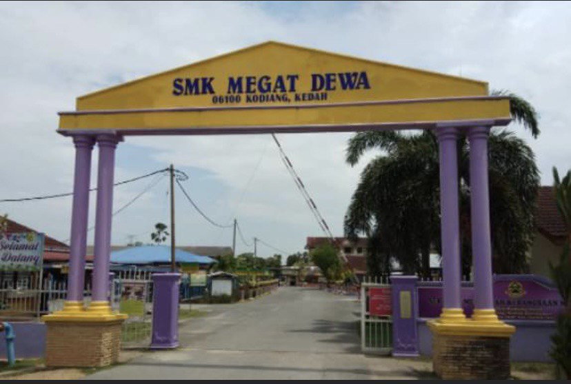

In August 2019, I'm start continuing my education in University Technology MARA (UiTM) Merbok, Kedah. The programme that I registered was Diploma in Information Management (IM110). The duration for my diploma is 2 years and 6 months or 5 semester. Now, I'm in the last semester for diploma.
A little about my education in university, since semester 1 I have learned many things and new challenges that I must faced-up. The environment in university very different if want to compare with the school. Here, I need to learn how to survive by myself. In addition, I have explore the place and people here. For advice, you guys that want to continue studies in university, please be careful in make friendship before you regret in the future.
Last but not least, my future plan in education, I will continue my studies in degree after I finish this diploma. I hope I can reach my goals in education and be a lecturer.
Sekolah Menengah Kebangsaan Megat Dewa

Before, I continue my studies in university, I finished my secondary school at Sekolah Menengah Kebangsaan Megat Dewa (SMKMD). Since form 1 until form 5, I became a pupil at the school. At there, I have been placed in special plan class or target class because the pupils that got the good result in UPSR only can stay in the class.
As people said, secondary school was a place for pupils to have fun time with friends. Many bitter-sweet memories have been created and I will never forget that. After I got quite good result in PT3, I have been placed in economy class or second target class. In this class, I have took three core subject such as economy, account and agriculture. For sure, my favourite subject is agriculture because a lot of practical works has taught and give me some best experiences.
Actually, I'm struggle during the SPM examination because lack of time management. But, I'm very grateful after I got the SPM result and continuing my studies in university.